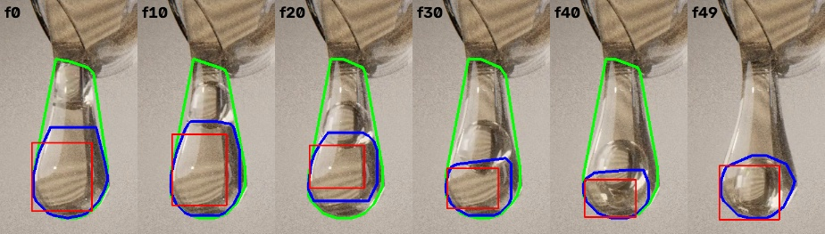
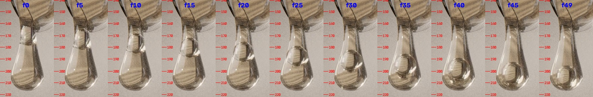
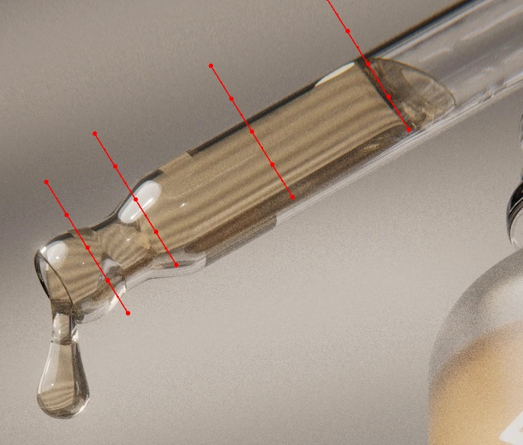
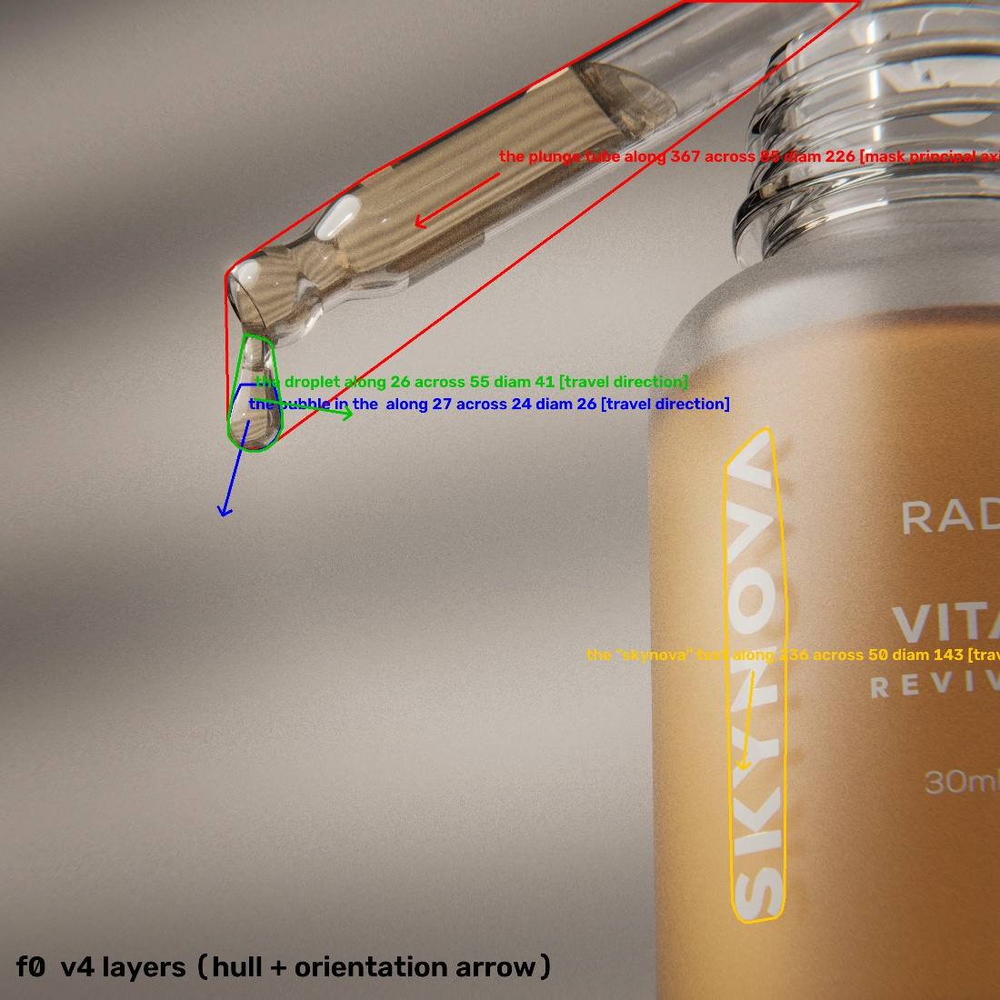
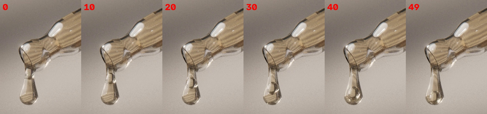

← 视频与问题 · 评估员逐视频报告（由 outputs/eval/*.md 生成）
simulation_0196 评估（滴管 / 液滴 / 气泡 / SKYNOVA 文字，D2 × 4）
评估时间 2026-10-23。结果来源：outputs/val_s2d_v3_routed.csv（v3）、outputs/val_s2d_v4_routed.csv（v4），2D 场景 outputs/scene2d_eval/s2d_v3|s2d_v4/simulation_0196.json。这是 2D 视频，c_support_v7 里没有 3D 拟合。 视频：验证集 480×480，测试集 2560×2560（分辨率高 5.3 倍）；30 fps，50 帧（1.63 s）。prior：气泡速度 0.00144 m/s。
结论先行：真值不存疑，概览里"真值存疑"的结论要撤回
按画面实测，气泡的位移约 37 px，不是 9 px。管线里的"气泡层"根本不是气泡：tracks_qwen 的掩码是液滴下半个鼓包，tracks 的框落在滴管液柱的弯月面上。用画面实测的气泡速度换算尺度约 6.3e-5 m/px，四题按画面算出来都在真值 ±10% 以内（见下表最后一列）。所以真值和 prior 是自洽的，in_progress.md 里"simulation_0196 真值与画面不自洽（标存疑）"和"真值存疑：simulation_0196 气泡位移与真值尺度不符"这两条应删除。v4 改用相对运动判据，注释里写的理由正是"9 px 的慢气泡"，但这 9 px 本身来自跟错的层。
题目表
| 题 | 真值 | 几何 | 场景值 v3 | 场景值 v4（conf） | Qwen=最终 v3 / v4 | MRA v3 / v4 | 按画面估算（6.3e-5 m/px） | 主因层 |
|---|---|---|---|---|---|---|---|---|
| 滴管直径 | 3.07 mm | 6.79 m | 无（无尺度） | 122 mm（0.30） | 5.34 / 5.34 mm | 0.2 / 0.2 | 管身外径 ≈ 47 px → 2.96 mm | 跟踪（尺度）+ 直径取法 |
| 液滴宽度 | 1.75 mm | 0.705 m | 无 | 30.0 mm（0.30） | 2.10 / 2.72 mm | 0.8 / 0.4 | 水平宽 26 px → 1.64 mm | 跟踪（尺度）+ v4 朝向回退 |
| 文字水平宽度 | 1.88 mm | 0.78 m | 无 | 26.9 mm（0.30） | 13.1 / 14.4 mm | 0 / 0 | w = 30 px → 1.89 mm | 跟踪（尺度）+ "horizontal" 语义 + v4 朝向 |
| 文字竖直高度 | 14.0 mm | 12.5 m | 无 | 127.7 mm（0.30） | 106 / 98.5 mm | 0 / 0 | h = 236 px → 14.9 mm | 跟踪（尺度） |
尺度区间：气泡全程平均 22.7 px/s → 6.3e-5 m/px；只算中段（f10–f35）27.6 px/s → 5.2e-5 m/px。四题按真值反推的尺度在 5.9–7.5e-5 m/px 之间，彼此一致，和 prior 也一致。
气泡中心 y 坐标（验证集像素，在 2560 高分辨率帧上目测，误差 ±2 px）：f0 约 168（还在液滴颈部，几乎看不见）、f5 172、f10 175、f15 180、f20 184、f25 189、f30 194、f35 198、f40 201、f45 203、f49 205；x 坐标从 119 漂到 117。气泡在下沉，越往下越慢，直径约 15–17 px。
逐层排查
- 解析：4 题的量都解析对了（diameter / width / width / height），prior 解析为 speed 0.00144，物体 = the bubble in the drop。但 "horizontal width" 里的 "horizontal" 在 2D 作答时被丢掉了（见问题 4）。
- 物体清单：4 个物体；text 和 lettering 合并为一个别名，正确；bubble 的 part_of 是 droplet，正确。没有问题。
- 跟踪（主因）
tracks/the bubble in the drop的框在 [277,30,325,68]，全程不动，位置在滴管液柱上端的弯月面，不在液滴里。relation_checks 用 "inside 0.00" 把它正确排除了。tracks_qwen/the bubble in the drop的框在 [109–130, 187–217]，掩码凸包面积 702 → 708 → 509 → 396 → 326（f0/10/20/30/40），从液滴下半个鼓包缩成了"气泡下方那一块"，不是气泡本身。凸包质心 y 只从 202 走到 207（一度回到 200），span 11 px。叠加图：bubble_layer_vs_truth.jpg（蓝 = 气泡层凸包，红 = 框，绿 = 液滴）。- 气泡是透明液滴里的透明球，f0 时还在颈部。在验证集分辨率下，Qwen 自己也定位不准：我在 f0/15/25/35/45 这几帧单独问 Qwen grounding，返回的中心 y 是 198 / 184 / 200 / 186 / 200，只有 f15 和 f45 接近真实位置。测试集是 2560 分辨率，气泡清楚得多，跟踪可能本来就能成功；验证集上的失败不一定能代表测试集。
- 液滴的框是 [109,161,136,217]，对的。text 的框是 [347,204,377,443]，对的；但 tracks 缓存里 "lettering" 这个别名被跟到了整个瓶子上（[307,0,481,480]），scene2d 选层时用的是 tracks_qwen 的 text，没受影响。
- 滴管的掩码 [108,0,412,216] 包含了下面挂着的液滴（凸包左下角到 (117,215)）。
- 场景图：droplet attached_to tube、bubble in droplet 都对。"plunge tube in the bottle" 不对（画面上滴管在瓶口外），但不影响作答。
- 尺度
- v3：气泡层 span 9 px，按旧的绝对判据算"不动"，没有尺度，4 题都没有场景值。这个结果是对的，跟错的层不该给尺度。
- v4：同一个层按相对判据算"在动"（jitter 0.02 px，snr 531），用净位移 / 时间得到 2.66 px/s，m/px = 5.41e-4，比画面实测大 8.6 倍，conf 0.301。
- 几何流水线：气泡速度只有 0.3 px，没有"prior 物体不动就判退化"的保护，输出的是米级的尺寸。
- 提示与路由：D2 题固定用 Qwen。Qwen 自己的值是按现实世界的瓶子尺寸估的（文字高 9–12 cm，管径 5–12 mm），而且常把 prior 的数字照抄过来（
val_s2d_v4d_sec_a：液滴答 0.00144，文字宽答 0.0144）。v4 的错误提示（液滴 30 mm）被 Qwen 部分采信，液滴的 MRA 从 0.8 掉到 0.4；val_s2d_v4_sec_a的文字宽 0.02692 就是原样照抄的提示值。 - 真值：自洽，不存疑（见上）。
根因结论
- prior 物体跟错，导致尺度错（跟踪层，主因，影响 4 题）：气泡层的掩码是液滴鼓包，位移只有真实的 1/7 到 1/8。场景值只有在尺度正确时才有用，所以这是 4 题共同的上游原因。in_progress 里没有这一条：已有的"候选选择 / 关系一致性"条目只能排除 tracks 那条错轨，排除不了 tracks_qwen 这条"在液滴里面、但不是气泡"的错轨。
- v4 相对运动判据回退（scene2d，影响 2 题）：渲染出来的静止物体 jitter 只有 0.02 px，质心 1 px 的漂移就被判成"在动"，朝向改用这点漂移的方向。液滴的朝向变成水平，width 取到竖直方向的 55 px，v3 是 26 px；文字倾斜 6°，across 从 29 px 变成 50 px。这条不在 in_progress 里。
- extent 的语义（scene2d，影响 2 题）："horizontal width" 没有按水平方向取 w；圆柱的 diameter 取的是 (along+across)/2 = 226 px，实际是 47 px。这条不在 in_progress 里。
逐条问题（按影响面排序）
1. prior 运动物体的身份没有校验，跟错的层仍然给出了尺度
- 现象：simulation_0196 的 4 题。tracks_qwen 气泡层凸包面积从 702 降到 326（−54%），质心 span 11 px；画面上气泡走了约 37 px。v4 得到 m/px = 5.41e-4（实际约 6.3e-5），四题场景值都偏大 8–40 倍。图：
simulation_0196/bubble_layer_vs_truth.jpg
，真实气泡轨迹：simulation_0196/bubble_grid.jpg
。 - 根因层：跟踪（perceive：用单帧单框提示 SAM 2，"容器内的小物体"没有身份校验），其次是尺度置信度（scene2d：没有用掩码形状的稳定性给 scale_conf 打折）。
- 同类视频：验证集上尺度来自 prior 运动的有 5 个（simulation_0196、internet_0005、internet_0013、simulation_0098_segmented、simulation_0193），后 4 个的 scale_conf 是 0.8，这次没有逐个查。凡是"X in/inside Y"的小运动物体（液滴里的气泡、杯里的冰块、管里的珠子）都有这个风险。
- 通用修改建议
- (a) scene2d 的
_set_scale：prior 运动层用于尺度之前，先检查刚体形状是否稳定。对 shape_hint 为 sphere/box 等刚体的层，算凸包面积（或 major/minor）随时间的变异；面积在 [min, max] 上变化超过约 30%，就判"身份或分割不稳定"，scale_conf 乘一个随变异增大而下降的系数；变化超过约 50% 时尺度判退化（回到 v3 的"无尺度"，交给 Qwen）。 - (b) relation_checks 里 "in" 关系的面积比：现在取的是框面积的某个代表值（0.20）。应改成逐帧的掩码面积比，取最大值，并检查它是否稳定。本例 f0 的凸包面积比是 702/1075 = 0.65，子物体占了容器的 2/3，应判不通过。
- (c) perceive（qp-tools）：对 dyn=true 的 prior 物体，在 2–3 个时刻请 Qwen 复核框。复核框和传播出来的掩码 IoU < 0.3 时，把复核框作为纠正提示加回 SAM 2；如果几次复核的位置彼此也不一致，就给这条轨迹标
identity_uncertain，供下游降低置信度。注意：本例在验证集分辨率下 Qwen 复核本身也不准，所以 (a)(b) 这类不依赖 VLM 的一致性检查优先。 - 验收：simulation_0196 的 v4 scale 要么判退化，要么 scale_conf ≤ 0.1，并且 4 题不再把错误提示传给 Qwen。另外 4 个 prior_layer_motion 视频的 scale 和 scale_conf 不变（它们的 prior 层掩码稳定）。
- 建议负责人：(a)(b) 交 qp-code-2d，(c) 交 qp-tools。


2. v4 相对运动判据让静止物体"在动"，朝向取了漂移方向，length/width 对调
- 现象：液滴层质心 span 1.1 px、jitter 0.02 px，被判 moving=True，朝向变成 [0.99, 0.16]（水平），width = across = 55.47 px（v3 是 26.1 px）。文字层同样被判在动，朝向偏了 6°，across 从 29.2 px 变成 49.8 px。图：
simulation_0196/v4_layers_f30.jpg
（绿色和黄色箭头是错的朝向）。 - 根因层：scene2d 的
Layer.moving：span > max(6·jitter, 2·NOISE_PX_REF·W/REF_WIDTH)，验证集 480 宽时这个下限只有 0.56 px；direction()只要 moving 就用 travel direction。渲染视频的掩码几乎没有抖动，所以亚像素漂移也会被判成运动。 - 同类视频：v4 里 span < 5 px 却被判 moving 的层，有 simulation_0196 的 droplet 和 text、internet_0005 的 light（span 4.4 px）和 floor tiles（span 4.5 px，structure，朝向取别人的运动方向）。internet_0013 的 roundabout lane 在 v4 下从 3.51 降到 1.52（路由后的 MRA 从 0.8 降到 0.2），它的朝向来自其他物体的运动方向，可能是同一次改动引起的，这次没有深查。
- 通用修改建议：区分"是否在动"（用于运动模型和 prior 测量）和"能否用运动方向作朝向"。后者再加一个绝对条件：净位移 ≥ 物体自身长边的约 10%，且 ≥ 约 3 px（按帧宽换算）；达不到就用掩码主轴。同时给
moving本身加一个和物体尺寸相关的下限（例如 span ≥ 物体长边的 5%），只用 jitter 的相对判据在渲染视频里没有意义。 - 验收：simulation_0196 的 droplet 和 text 的 orientation_source 回到 mask principal axis，droplet across ≈ 26 px，text across ≈ 29 px。internet_0005 和 internet_0013 的场景值回到 v3 水平或更好，其余视频的场景值不变。
- 建议负责人：qp-code-2d。

3. 细长圆柱的 diameter 取了 (along+across)/2
- 现象：滴管 along 367 px、across 85 px，diam = 226 px；实测管身外径约 47 px（四条垂直剖面的边缘在 −5 和 +40~43 处）。即使尺度正确，这样算出来也是 14 mm（真值 3.07 mm），偏了 4.6 倍；直接用 across 85 px 也偏大，因为掩码里包含了挂着的液滴和收口段。图：
simulation_0196/tube_profile.jpg
（红线是垂直剖面，点间距 10 px）。 - 根因层：scene2d 的
extent()/extent_px()，diameter 一律取 mean(along, across)。 - 同类视频：验证集上细长物体问 diameter 的只有这一题，球体类（simulation_0193 的行星等）用平均值没有问题。测试集是同一批视频，所以同样受影响。
- 通用修改建议：along/across > 约 1.5，或 shape_hint 为 cylinder/tube/rod 时，diameter 取横截面宽度：沿主轴切片，在每个切片上测垂直于主轴的掩码宽度，取中位数（用掩码，不用凸包）。有 attached_to / part_of 子物体（本例的 droplet）时，先从父物体掩码里减去子物体的掩码，再算宽度。
- 验收：simulation_0196 滴管的 diameter 像素值落在 40–55 px；simulation_0193 和 internet_0013 的 diameter 不变。
- 建议负责人：qp-code-2d（extents2d 需要输出切片宽度时同属 qp-code-2d）。

4. "horizontal width / vertical height" 的方向限定词没有用到尺寸题上
- 现象："horizontal width of the SKYNOVA text" 取的是 across（v3 29.2 px，v4 49.8 px），应取水平方向的 w = 30 px。文字是竖排的，"horizontal width" 就是字母高度方向。Qwen 也把这题理解成了整个单词的长度（答 13–16 mm）。
- 根因层：scene2d 的
extent()：quantity == "width"时一律取 across。line 1373 只给速度和距离提取了 horizontal/vertical 分量（comp），尺寸题没有。"vertical height" 刚好取的是 h，所以是对的。 - 同类视频：验证集只有这一题；测试集同一视频同样受影响。
- 通用修改建议：尺寸题出现 "horizontal" 时取 w，出现 "vertical" 时取 h，在 length / width / height / size 上都生效。另外给 Qwen 的提示里写明"horizontal = 画面水平方向的范围"。
- 验收：这题的像素值等于 w（30 px），其他尺寸题不变。
- 建议负责人：qp-code-2d（如果放到 parse 里做 extent_axis 字段，就交 qp-tools）。
5. 几何流水线的 prior 速度测得接近 0 时没有退化保护
- 现象：几何值的 note 是 "prior speed of 'the bubble in the drop' = 0.3 px"，用的是 tracks 那条不动的错轨，输出 0.7–12.5 m 的米级尺寸，这些值作为几何提示给了 Qwen（Qwen 没有采信）。
- 根因层：几何流水线（run/solve/calibrate）的 prior 运动标定，没有 scene2d v3 那种"prior 物体不动就判退化"的判断。
- 通用修改建议：prior 是 speed / displacement 时，如果 prior 物体的净位移低于噪声下限（和 scene2d 共用同一套判据），就按回退处理：不给几何提示，route 用
--fallback-vlm。 - 验收：simulation_0196 的几何结果走回退，不再向 Qwen 提供米级提示。
- 建议负责人：qp-tools（route / vlm_hint 的回退标记）。标定逻辑在 run/solve 里，由 coordinator 判断归属。
6. 低置信度的错误提示仍然拉偏 Qwen
- 现象：v4 给 Qwen 的提示 conf 只有 0.301，Qwen 照抄了文字宽 26.9 mm；液滴的答案从 2.10 mm 变成 2.72 mm，MRA 从 0.8 掉到 0.4。
- 根因层：提示门控（vlm_hint 的
--hint2d按 conf 过滤）。 - 通用修改建议：如果问题 1 落地，这里自然会好；门控阈值的选择由 coordinator 按全量验证集定。in_progress 里已有"Qwen 不采信好提示——等置信度路由"一条，本条是它的反面（采信了坏提示），标注即可，不单独立项。
- 建议负责人：qp-tools（已在进行的置信度路由）。
图（scratchpad）
simulation_0196/bubble_grid.jpg
：高分辨率液滴裁剪（f0–f49，每 5 帧一张），左侧刻度是验证集像素 y。simulation_0196/bubble_layer_vs_truth.jpg
：气泡层凸包（蓝）和框（红）对比液滴（绿）。simulation_0196/v4_layers_f0.jpg
、simulation_0196/v4_layers_f30.jpg
：v4 四个层的凸包、朝向箭头和 along/across/diam。simulation_0196/tube_profile.jpg
：滴管垂直剖面。simulation_0196/drop_hires_strip.jpg
：液滴全景序列。